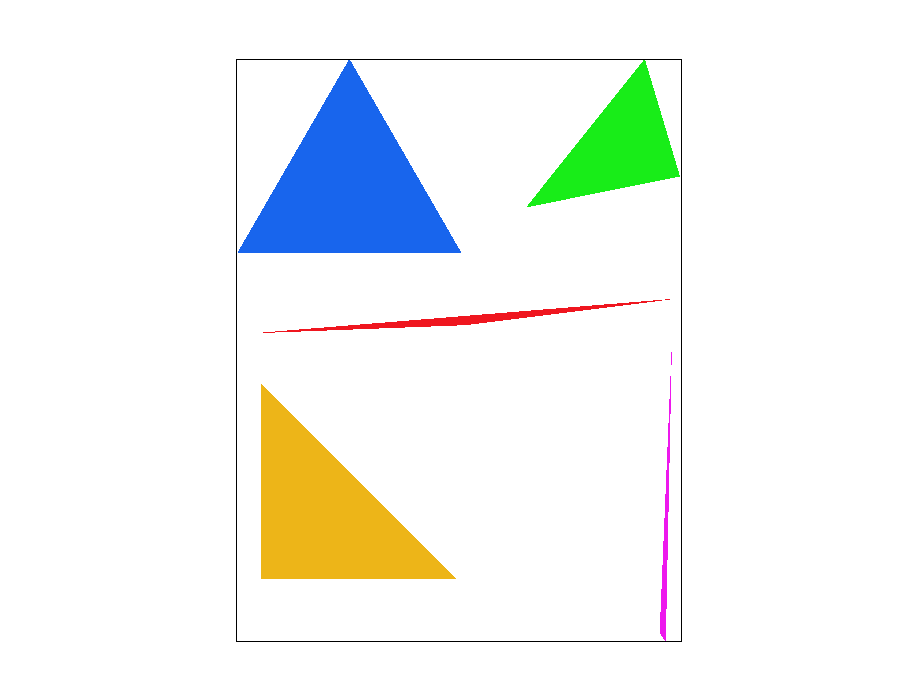
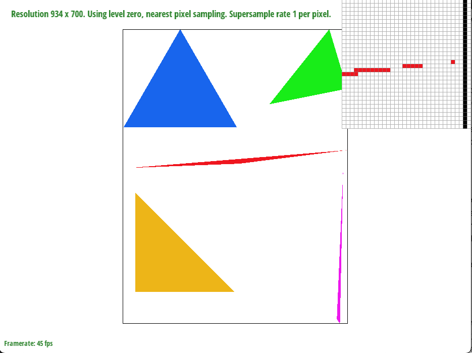
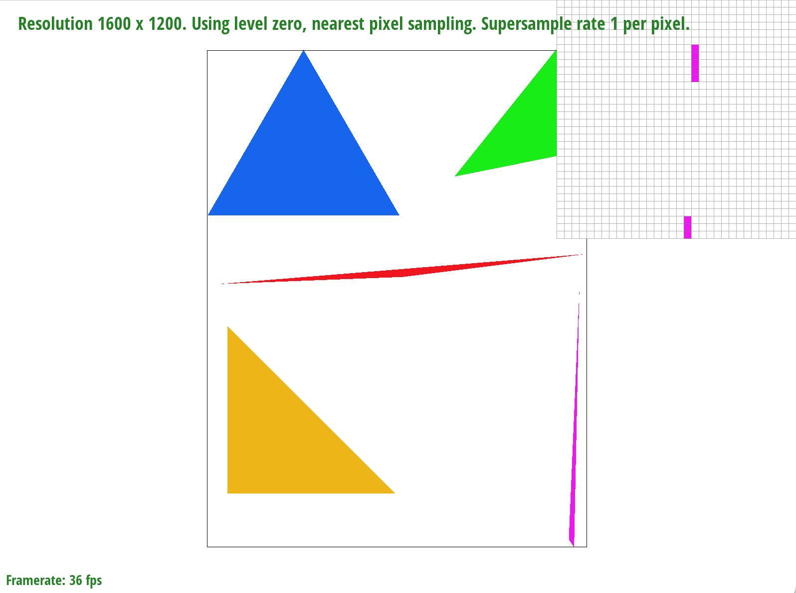
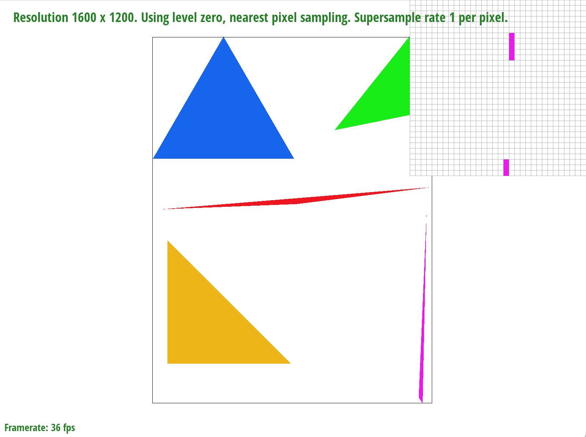
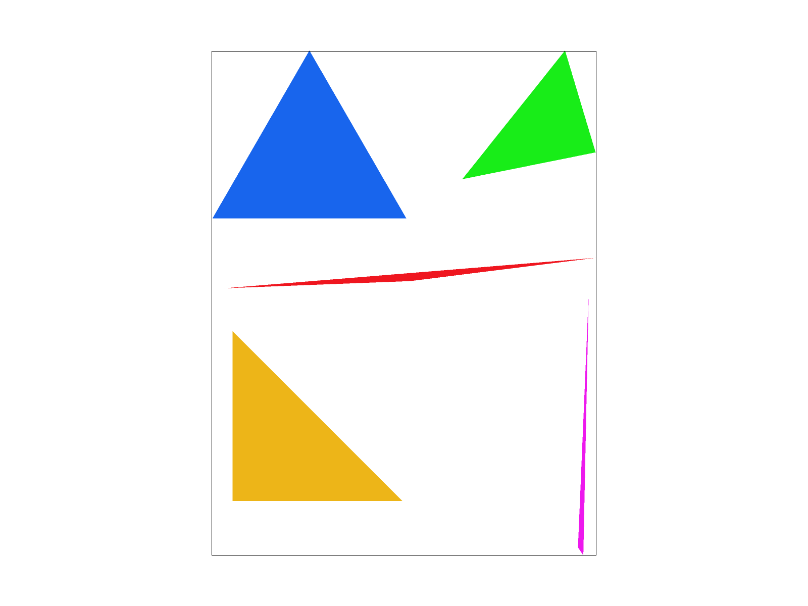
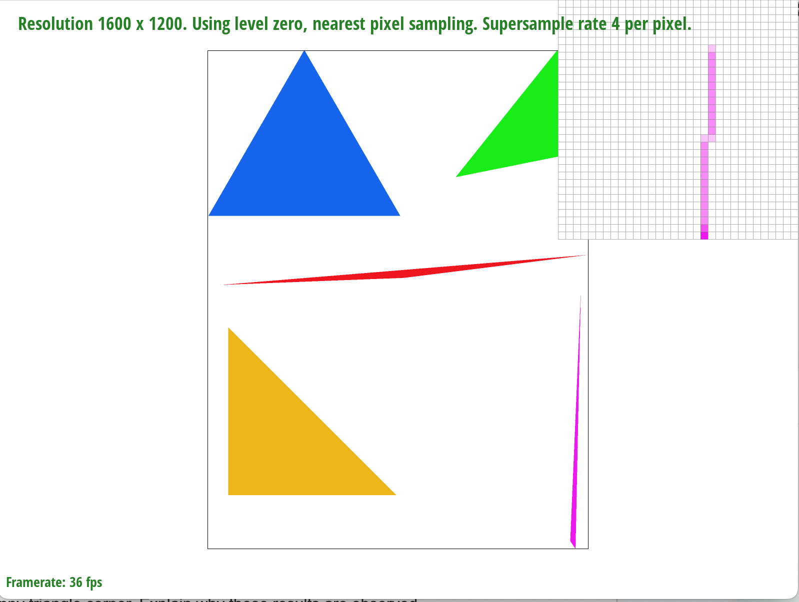
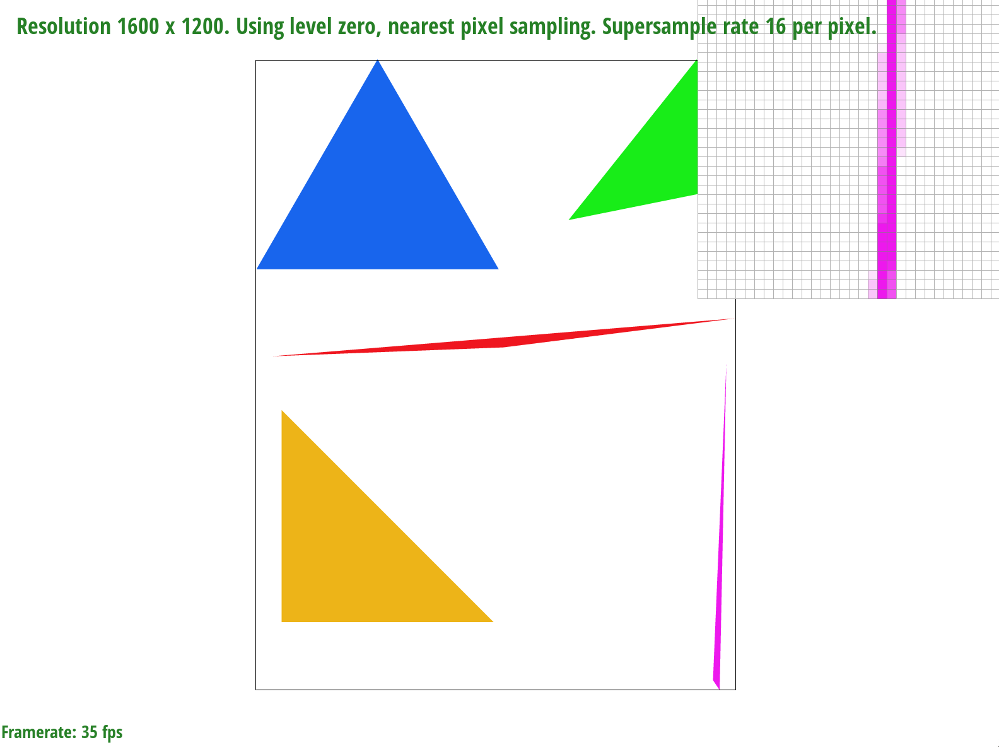
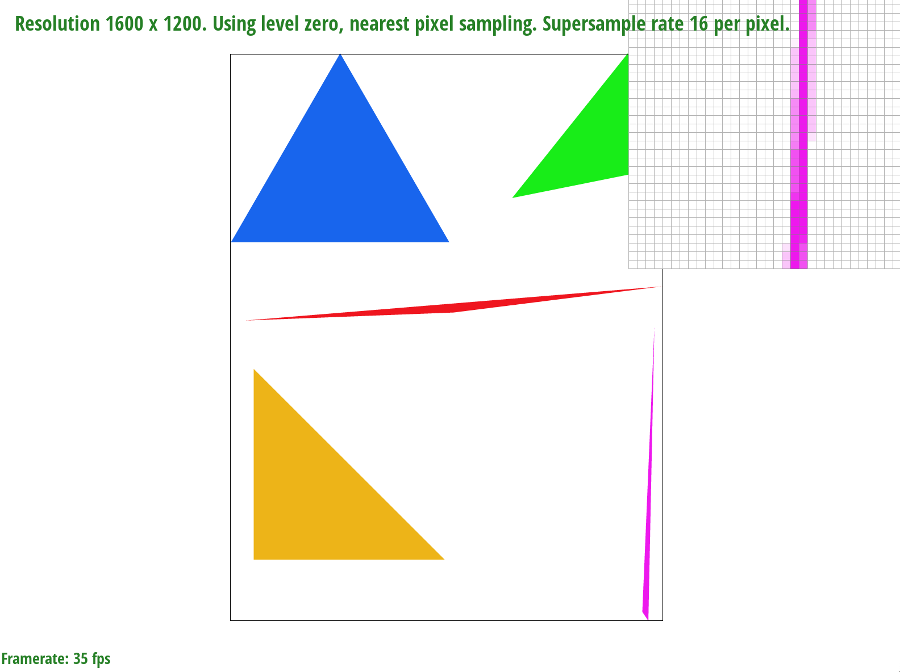
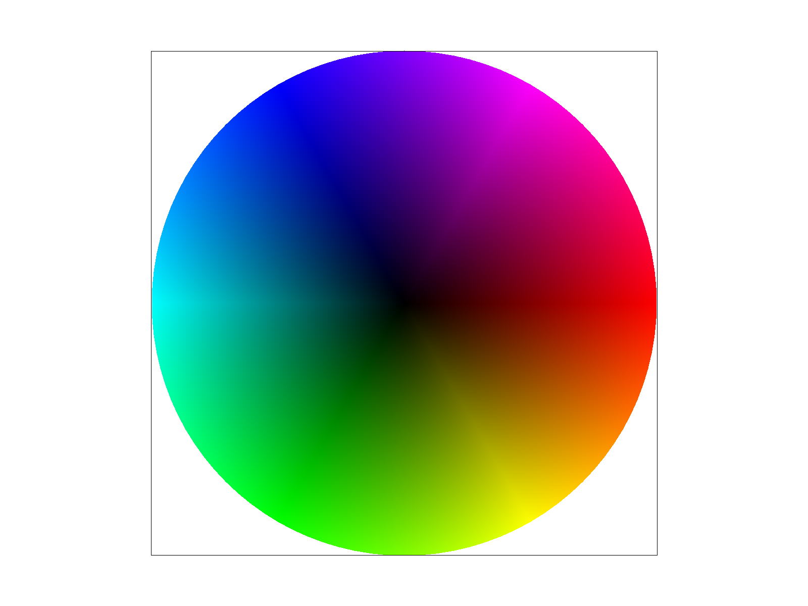

Overview
Give a high-level overview of what you implemented in this homework. Think about what you've built as a whole. Share your thoughts on what interesting things you've learned from completing the homework.
In this homework, I implemented various rasterization techniques, explored pixel sampling methods for texture mapping, and used barycentric coordinates for color interpolation within triangles. One part of this that I found particularly enjoyable was building up from basic shape rasterization to sophisticated texture mapping with antialiasing. There are many ways that sampling and averaging between points to create a smooth effect can enhance the overall viewing experience for computer graphics.
Section I: Rasterization
Part 1: Rasterizing single-color triangles
Walk through how you rasterize triangles in your own words.
First, I calculated the bounding box by determining the minimum and maximum x and y coordinates of the triangle. Then, for each pixel within this bounding box, I check if the pixel’s offset center is inside the triangle using the point-in-triangle test (cross product method. If the pixel's center is determined to be inside the triangle or on its boundary, I call `fill_pixel()` to fill in the pixel with the specified color.
Explain how your algorithm is no worse than one that checks each sample within the bounding box of the triangle.
Because my algorithm iterates through each pixel of the bounding box exactly one time, it will never perform worse than an algorithm that checks each sample within the bounding box of the triangle. Show a png screenshot of basic/test4.svg with the default viewing parameters and with the pixel inspector centered on an interesting part of the scene.
Show a png screenshot of basic/test4.svg with the default viewing parameters and with the pixel inspector centered on an interesting part of the scene.
 Part 2: Antialiasing triangles
Walk through your supersampling algorithm and data structures. Why is supersampling useful? What modifications did you make to the rasterization pipeline in the process? Explain how you used supersampling to antialias your triangles.
Supersampling is useful because it performs antialiasing by rendering the image at higher resolutions then
downsampling.
To build the supersampling algorithm, I first created a higher resolution frame buffer to store the color
values of the supersampled pixels. For every pixel in the original frame buffer, I created sample_rate ^ 2 more
pixels fitting into the same space.
hen, I modified the set_sample_rate method to set the sample rate and resizes the sample_buffer to hold all
supersamples.
Finally for rasterizing triangles, my function calculates the bounding box of a triangle and iterates over
each pixel within it. For each pixel, it iterates over each supersample and repeats the same process from task 1
to determine if the sample is inside the triangle. If sample is inside, its color is set in the sample_buffer.
After all elements are rasterized, this function averages the colors of the supersamples for each pixel, converts
them to 8-bit color values, and then stores them in the final rgb_framebuffer_target. This color averaging process
is what antialias the triangle, while achieving higher resolution.
Show png screenshots of basic/test4.svg with the default viewing parameters and sample rates 1, 4, and 16 to compare them side-by-side. Position the pixel inspector over an area that showcases the effect dramatically; for example, a very skinny triangle corner. Explain why these results are observed.
For the very skinny triangle corners, lower sample rates will undersample the color and leave sparse corners. By increasing the sample rate then producing an averaged color, the triangles for higher sample rates will have more accurate yet slightly blurred corners.
Sample Rate 1
 

Sample Rate 4
 Sample Rate 16
 

Part 3: Transforms
Create an updated version of svg/transforms/robot.svg with cubeman doing something more interesting, like waving or running. Feel free to change his colors or proportions to suit your creativity. Save your svg file as my_robot.svg in your docs/ directory and show a png screenshot of your rendered drawing in your write-up. Explain what you were trying to do with cubeman in words.

Cubeman is blue and waving.
Section II: Sampling
Part 4: Barycentric coordinates
Explain barycentric coordinates in your own words and use an image to aid you in your explanation. One idea is to use a svg file that plots a single triangle with one red, one green, and one blue vertex, which should produce a smoothly blended color triangle.
The barycentric coordinates are a way to describe any point within a triangle as a weighted average of the triangle's vertices. The color at each pixel is calculated pasted on the areas of subtriangles formed by the point and the vertices of the main triangle. More specifically, the the interpolation formula color = alpha * c0 + beta * c1 + gamma * c2 blends the vertex colors based on the point's position within the triangle.
In the image below, the method produces a smoothly blended triangle with one purple, one pink, and one orange vertex.
Show a png screenshot of svg/basic/test7.svg with default viewing parameters and sample rate 1. If you make any additional images with color gradients, include them.
Part 5: "Pixel sampling" for texture mapping
Part 6: "Level sampling" with mipmaps for texture mapping
Section III: Art Competition
If you are not participating in the optional art competition, don't worry about this section!